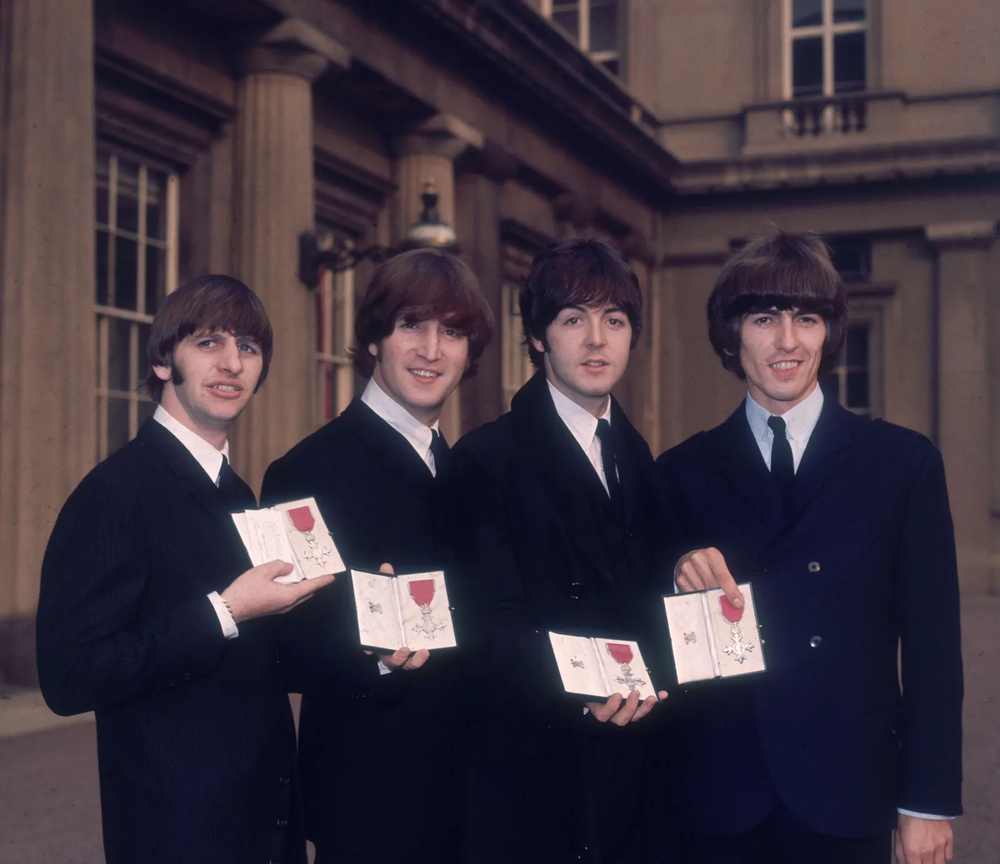
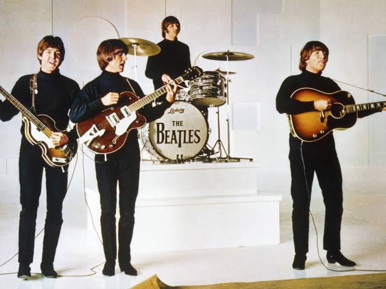

The Beatles Beginning
I don't actually have much to say on this page, admittedly. This was supposed to be a lore drop site. However, if you're reading this far, we are officially to the "give random info to fill space page." And so it shall be. In the very beginning, the Beatles were a different band by the name the Quarrymen. After failing to get their start, they went through a few other names (and a few other memebers) before having the name and lineup we recognize today. This led them to years of fame and success that helped them all achieve their dreams, while simultaneously realizing fame can be miserable, and despite their success, their lives could still be empty.
The Disbandment
During the disbandment, most of the band members were ready to fo theiur own way. The only person who still havily identified with the band would Paul, and as we've seen throughout all band history, as soon as one person is out, there's nothing that can really be done. While people like to pinpoint Yoko Ono as the reason they split up, it really was a matter of artistic differences, band tension, and unrest in the group. Mainly, the mebers were tired, bored, and had thheir own styles. So, George and Lennon were relived to go, Ringo didn't mind either way, and Paul was ultimately forced to let their history go.
Basic Timeline
- Quarrymen form in 1956
- Beatles Form 1960
- Beatles Drop First Album in 1963
- George Drops "All Things Must Pass" in 1970
- Beatles Officially Disband in 1974

